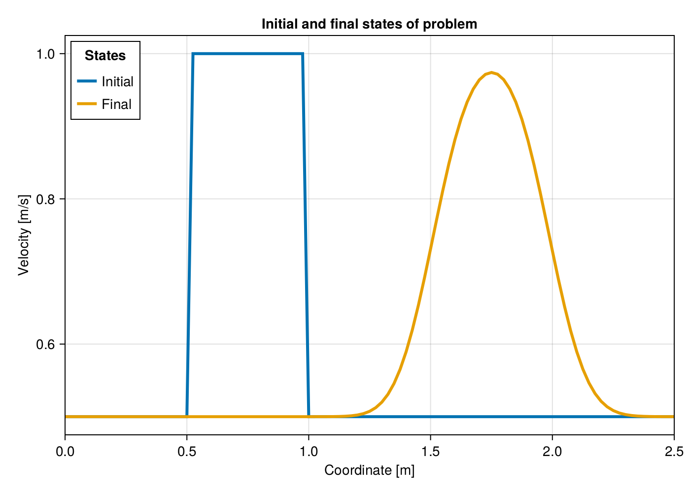
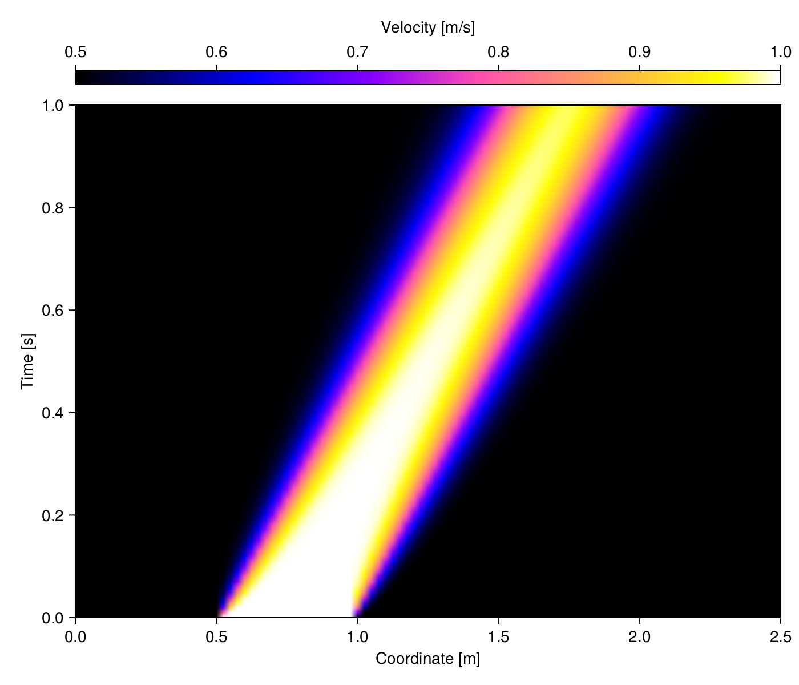
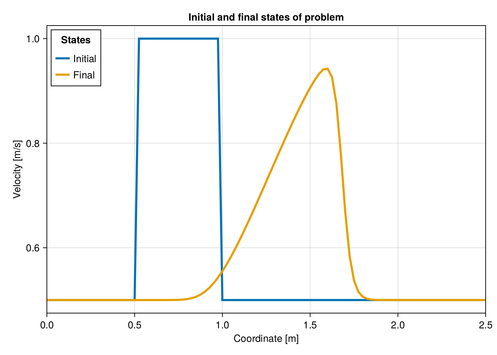
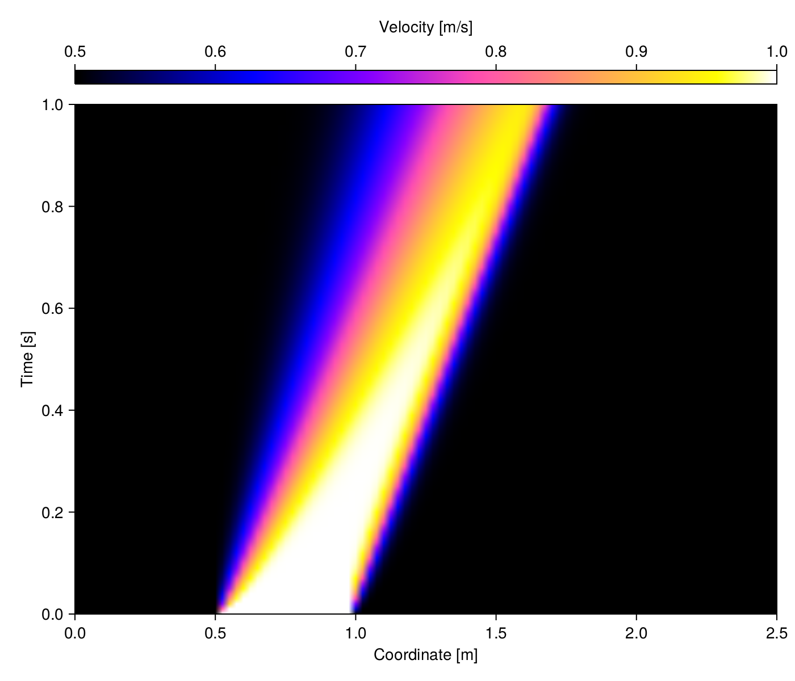

Introduction to Advection in 1-D
Advection is one of the terms present in the Navier-Stokes equations; it describes the transport of a quantity induced by a vector field. The choice to start with this topic rather than diffusion or the Poisson equation is mainly justified by the simple computational implementation in the explicit form of this equation using an upwind scheme. In what follows we will first address the linear and subsequently nonlinear form of advection. To conclude the chapter, we will perform a numerical stability analysis of the problem.
The general goals of this study can be summarized as:
- Learn advection both in PDE and numerical perspectives.
- Implement a set of tools to solve advection equation.
- Provide post-processing for standard visualization of results.
- Learn the basics of numerical stability analysis.
Required tools
Once the goals have been set, we should already be able to guess the base set of tools required for their achievement. Below we specify the logic behind our choices.
Since Julia is a language conceived for scientific computing, all the tooling for the implementation of the equations in a vectorized form is already available, so we do not need any further packages for now.
In this study, to ensure the physical consistency of derived equations and their correct implementation, we will provide numerical values with units through u-strings provided by package
Unitful.For all the visualizations we will make use of
CairoMakie.
Using units could represent some overhead in large scale problems. It is important to keep the code compatible with purely numerical values when implementing packages.
The following block import the required packages:
using Unitful
using CairoMakieAdvection fundamentals
Advection in one dimension is the phenomenon describing the evolution of a quantity $u$ transported across a field of constant velocity $c$. Also notice that the quantity $u$ may be the velocity field itself in a more general framework we will deal with laterm leading to the nonlinear form of advection equation. Transport is expressed in time and space as $u(x,t+\Delta{}t)=u(x-c\Delta{}t,t)$. That indicates simply that the state at ${x}-{c}\Delta{t}$ will be found at position $x$ after a time interval $\Delta{}t$, i.e. for a constante velocity field $c$ the profile $u$ is invariant. For a very short time interval $\Delta{}t$ with respect to system length $L$ and velocity $c$, i.e $\Delta{}t\ll{}c^{-1}L$, this expression can be expanded as a Taylor series and one can derive the following equation:
\[u(x,t)+\Delta{}t\dfrac{du}{dt} \simeq{} u(x,t)-c\Delta{}t\dfrac{du}{dx} \implies{} \dfrac{\partial{}u}{\partial{}t}+c\dfrac{\partial{}u}{\partial{}x}=0\]
Under these conditions, the above equation has a trivial analytical solution that can be found e.g. by the method of characteristics, what is outside our scope here. Consider the initial condition $u_{0}:=u(x,0)$ (the subscript indicates the initial instant). The transport produced by the field ${c}$ can be expressed in terms of this initial condition as $u(x,t)=u_{0}(x-ct)$. This result is important for the study of numerical methods because it allows for validation of implemented programs.
Since our goal is the introduction to the computational aspects only, we skip a detailed numerical analyses showing that centered in space schemes are not suitable for the computation of space derivatives applied to advection equation since they exhibit an unconditionally unstable behavior. The origin of unstability of some of these is is quite understandable from a physical standpoint. Information is travelling along the velocity field, and any information in front of the traveling wave cannot have any knowledge on the prior shape of the wave. That is why so-called upwind schemes are suitable for numerical computation of advection. In such family of schemes, the information coming from the origin of the advecting flow is used to evaluate the upcoming wave position, i.e. for $c>0$ the solution at $x$ is computed from the solution at $x-\Delta{}x$, thus the reason why it is called upwind, here $\Delta{}x$ is a finite variation over coordinate $x$. It can be shown through a Taylor series expansion truncated at first order that
\[\dfrac{\partial{}u}{\partial{}x}\approx \dfrac{u(x)-u(x-\delta{}x)}{\delta{}x}+\mathcal{O}{\delta{}x}\]
The above expression is quite intuitive. Let's see how would it be implemented as Julia code. Supose you have an array of solution u at each of the discrete space points x. Since points are spaced by $\Delta{}x$, represented in code as Δx , then taking the difference between consecutive values of u is equivalent to the upwind scheme as follows:
dudx = (u[2:end] - u[1:end-1]) / Δx;Remember that indices in Julia start at 1, not at 0 as in Python or C++.
Other higher order expansions are available in the literature, but they are not well-suited for an introductory course on numerical implementation of the solution of PDE's, so we stick with this low order approximation in what follows. An analogous expansion can be performed for the time derivative of the advection equation. Notice that for time the expansion is performed towards the future. This leads to the following space-time discretization to the problem
\[\frac{u(t+\Delta{}t)-u(t)}{\Delta{}t}+c\frac{u(x)-u(x-\Delta{}x)}{\Delta{}x}=0\]
This approximate representation of the advection PDE is difficult to read and distant from what it would look in a computer, where it can be represented through indexed arrays or matrices. It is common in the FDM to use subscripts for denoting space indices, and superscript for time-steps. This way we translate $t+\Delta{}t$ as $n+1$, where $n$ is the time-step number, and $x-\Delta{}x$ becomes $i-1$, where $i$ is the index of the FDM space coordinate node. Also it is useful to maker shorthands $\tau=\Delta{}t$ and $\delta=\Delta{}x$. The equation becomes
\[\frac{u_{i}^{n+1}-u_{i}^n}{\tau}+c\frac{u_{i}^n-u_{i-1}^n}{\delta}=0\]
Our goal of approaching the equation to the computer implementation format has been reached. So far we are only considering fixed time-steps $\tau$ and internodal distances $\delta$, and constant advection velocity $c$. Since problem initial state is a priori knowledge for PDE integration, at $n=0$ and $\forall{}i$ we dispose of the state $u_{i}^{n}=u_{i}^{0}$, so the only unknown in the above equation is $u_{i}^{n+1}$, for which it can be solved
\[u_{i}^{n+1}=(1-\alpha)u_{i}^{n}+\alpha{}u_{i-1}^n\]
Such approximation that makes use of current state to predict a future one is called an explicit time-stepping scheme and has been implied without explanation in the above discretization approach. With this expression we have the complete mathematical tooling to solve the simplest advection equation. Notice that for $c<0$ the direction of the upwind space derivative would change and the solution becomes $u_{i}^{n+1}=(1+\alpha)u_{i}^{n}-\alpha{}u_{i+1}^n$.
Now suppose we want to solve advection of a given wave over a 1-D space domain. The discrete solution derived above provides most information we need to gather before starting to develop a computer solution, but it says nothing about the sizes of discrete steps $\tau$ and $\delta$. For now we rely only on the mathematical background we have on Taylor series expansion to think about it, and we postpone the methods of computing suitable steps for later.
With this formulation we are ready to start sketching a numerical solver.
Program structure
In what follows we focus on the computer implementation of the problem.
So let's again sketch some goals for our program:
- It must handle both linear and nonlinear 1-D advection equations.
- It must provide a reusable time-stepping function for integration.
- It must provide standardized post-processing utilities.
Because we are seeking generality to solve a whole class of problems, i.e. any type of 1-D advection problem it is interesting considering the use of abstract types. These are used to structure a hierarchy of problems. Abstract types in Julia do not really have arguments, as it is possible in other languages. They simply provide a name and associated methods. Notice that because of this, when inheriting from abstract types, it is important to make sure the new structures are compatible with the base methods, that they provide the required arguments. So we start with the definition of an abstract type for all of the advection equations we might implement here:
abstract type AbstractAdvection end!!! info "Real world cases"
Previously, by hierarchy we meant models that can be a subset of larger
scope models. In a library implementation you might find something as:
```julia
abstract type AbstractModel end
abstract type AbstractPhysicalModel <: AbstractModel end
abstract type AbstractODEModel <: AbstractPhysicalModel end
abstract type AbstractPDEModel <: AbstractPhysicalModel end
abstract type AbstractKinetics <: AbstractODEModel end
abstract type AbstractAdvection <: AbstractPDEModel end
abstract type AbstractAdvection1D <: AbstractAdvection end
abstract type AbstractAdvection2D <: AbstractAdvection end
struct LinearAdvection1D <: AbstractAdvection1D end
struct NonlinearAdvection1D <: AbstractAdvection1D end
```The solution loop is straightforward: we store the current state and solve over the same array the next time solution, what constitutes a simple explicit Euler time-stepping scheme. Since Julia supports vectorized operations we use the slice syntax to evaluate $(1-\alpha)u_{i}^{n}+\alpha{}u_{i-1}^n$ and attribute it elementwise to $u_{i}^{n+1}$. Notice that element u[1] is never updated here, think for a moment what are the implications of this.
function integrate!(p::AbstractAdvection)::Nothing
for (k, t) in enumerate(p.t[1:end-1])
# Uncomment below to check correct stepping:
# @info "Advancing from ``t to ``(p.t[k+1])"
p.M[k, :] = copy(ustrip(p.u))
step!(p)
end
p.M[end, :] = copy(ustrip(p.u))
return nothing
endintegrate! (generic function with 1 method)Note: method ustrip from Uniful was used to remove units from arrays before plotting because their rendering is not converted to $\LaTeX$ in axes.
function plotstate(p::AbstractAdvection)::Figure
x = ustrip(p.x)
u₀ = p.M[1, 1:end]
u₁ = p.M[end, 1:end]
fig = Figure(resolution = (700, 500))
ax = Axis(fig[1, 1])
l1 = lines!(ax, x, u₀; linewidth = 3)
l2 = lines!(ax, x, u₁; linewidth = 3)
ax.title = "Initial and final states of problem"
ax.xlabel = "Coordinate [m]"
ax.ylabel = "Velocity [m/s]"
xlims!(ax, extrema(x))
axislegend(ax, [l1, l2], ["Initial", "Final"], "States",
position = :lt, orientation = :vertical)
return fig
endplotstate (generic function with 1 method)It is also interesting to provide a function to visualize space solution over time. This is the job of a kymograph, which is provided below.
Because they will be reused several times in this chapter, we wrap the kymograph and comparison plotting in the functions given below. It is generally a good idea to follow some DRY directives, but care must be take not to create new methods for simple one-liners, which could become hard to maintain later.
function kymograph(p::AbstractAdvection; xticks, yticks, zticks)::Figure
colormap = :gnuplot2
colorrange = extrema(zticks)
x = ustrip(p.x)
y = ustrip(p.t)
z = transpose(p.M)
fig = Figure(resolution = (700, 600))
ax = Axis(fig[2, 1], xlabel = "Coordinate [m]", ylabel = "Time [s]")
hm = heatmap!(ax, x, y, z; colormap, interpolate = true, colorrange)
cb = Colorbar(fig[1, 1], hm, vertical = false, label = "Velocity [m/s]")
ax.xticks = xticks
ax.yticks = yticks
xlims!(ax, extrema(ax.xticks.val))
ylims!(ax, extrema(ax.yticks.val))
cb.ticks = zticks
cb.limits = extrema(zticks)
return fig
endkymograph (generic function with 1 method)Linear advection
Knowing the nodal distance $\delta$, there are many ways of allocating the initial state for $u$, the most computationally efficient being allocating an array with the right number of nodes, them using multiples of $\delta$ to attribute the value at each cell. We will not proceed this way here. Instead we provide ranges representing both space and time nodes. Notice that Julia does not expand these ranges, you need to collect them manully or use them in interation loops.
Because we need to know the nodal positions to compute initial state, we already collect the vector. The first 5 elements are displayed. By x[1:5] we remember that Julia indexing system starts at 1 and the slicing 1:5 includes the last index, what would not be true in Python, for instance.
For allocating arrays of same shapes, Julia provides the method similar. Since we are using units with our values, that method cannot be used here with array for $x$ to allocate the density array $u$, otherwise the result would carray space dimensions. Instead we create a ones array of appropriate numerical type and dimensions and provide it with units carried by $u_{0}$. Notice that this initializes the whole array with the value found in the square wave.
With all this elements we prepare the solution. We start by computing the constant $\alpha$ known as Courant number. Observe that this is a dimensionless number since it results from the product of a velocity by the inverse of a numerical velocity. Depending on the choice of derivative approximations there may be a upper limit for which the numerical integration will be stable. We are not entering in these details yet, for now you can read more about this here to get a taste of the numerical analysis to come.
In the present case we might want to store the solution of all time steps for performing an animation or display a kymograph, what will be the case here. For small to medium sized problems, it is more effecient to allocate the memory for solution storage ahead of time, especially when working with fixed time steps. For larger problems or variable time step size, it is sometimes necessary to allocate memory for part of the solution and from times to times dump current chunk to the disk, or handle a buffer with limited memory.
Since this is a very simple 1-D problem, we chose to have a matrix will one row per time step, so its dimensions are $n_t\times{}n_x$, as follows.
struct LinearAdvection1D <: AbstractAdvection
t::Vector{Unitful.Time}
x::Vector{Unitful.Length}
u::Vector{Unitful.Velocity}
c::Unitful.Velocity
δ::Unitful.Length
τ::Unitful.Time
M::Matrix{Float64}
function LinearAdvection1D(L, T, c, nₓ, nₜ; init, integ = true)
δ = L / (nₓ - 1)
τ = T / (nₜ - 1)
t = collect(0.0u"s":τ:T)
x = collect(0.0u"m":δ:L)
u = 0u"m/s" * zeros(Float64, nₓ)
M = zeros(Float64, (nₜ, nₓ))
init(x, u)
obj = new(t, x, u, c, δ, τ, M)
integ && integrate!(obj)
return obj
end
endfunction step!(p::LinearAdvection1D)::Nothing
α = p.c * (p.τ / p.δ)
p.u[2:end] = (1 - α) * p.u[2:end] + α * p.u[1:end-1]
return nothing
endstep! (generic function with 1 method)Problem statement
Consider a hypothetical domain of $L=2.5\:\mathrm{m}$ along along $x$ axis over which we have initially a wave of an unsoluble substance moving at to $u=1\:\mathrm{m\cdotp{}s^{-1}}$ located in interval $x\in[0.5;1.0]\:\mathrm{m}$, being half this value elsewhere. At the starting time, a fluid flow with velocity $c=1\:\mathrm{m\cdotp{}s^{-1}}$ is forced through the domain, which is already immersed in the fluid.
Determine the mass density $u(x,t)$ of the substance for the next $T=1.0\:\mathrm{s}$ interval.
This problem statement provides all the basic building blocks to implement the solution, which we translate into Julia code as:
# Domain length.
L = 2.5u"m"
# Time domain.
T = 1.0u"s"
# Fluid velocity.
c = 1.0u"m/s"
# Wave velocity.
u₀ = 1.0u"m/s"
# Initialization function.
init(x, u) = let
hump = (0.5u"m" .< x) .& (x .< 1.0u"m")
u[:] .= u₀ / 2.0
u[hump] .= u₀
endTo modify the regions ouside the peak we create a boolean mask. In Julia, to evaluate a binary operation elementwise, a dot is placed in front of the operator. So here xᵤ[1] .< x means true where elements of x are less than the first element of xᵤ, for instance. Since the mask we created represent the square wave region, we negate the resulting array to set zero elsewhere in the density array u. Also observe the .= notation to attribute results. This vectorized operations supported by Julia avoid the excessive use of loops and result in easier to maintain code.
Solve linear advection
To remain within the region where the error introduced by the discretization scheme remains small, we need to think what would be a good number of steps and nodes to split our system. Thinking physically, we would not want the density $u$ to be transported by more than one node distance $\delta$ in a time step $\tau$, otherwise we would be skipping information transfer. Thus, there is some logic constraining $\delta\le{}c\tau$ to be respected here. We also have infinite gradients in the specified square wave of mass density, so space step should not be too small otherwise it would lead to a overflow error..., well, there are many other aspects to be considered, but we did not introduce them yet. So let's just assume that as a rule of thumb both space and time discretization must be reasonably smaller than the integration domains.
Below we assume this reasonably small criterium is 1/500 the size of the system and compute the required nodal distance and time step. Notice the - 1 in the denominator, because the number of intervals between $k$ nodes is $k-1$. The computed values are displayed with their respective units.
nₓ = 101
nₜ = 101
p1 = LinearAdvection1D(L, T, c, nₓ, nₜ; init)Below we display a comparison between initial and final states of the advected wave.
The analytical solution to this problem states that the shape of the density profile should not evolve in time, just its position. In the kymograph above that would mean that the only valid values in the heat map would be those originally in the initial state array. This is not actually what we observe. We get just qualitative agreement between the expected and actual position of our moving hump $u$, which apparently diffused over the domain. And this exaclty what happened, from a numerical standpoint. When we approximated the spacial derivative, we were actually truncating a Taylor series expansion of $u$ at the first term, as in:
\[u(x) = u(x-\Delta{}x) + \frac{(\Delta{}x)^{1}}{1!}\frac{\mathrm{d}u}{\mathrm{d}x} + \frac{(\Delta{}x)^{2}}{2!}\frac{\mathrm{d}^{2}u}{\mathrm{d}x^{2}} + \mathcal{O}((\Delta{}x)^{3})\]
so that the derivative we approximated was in fact:
\[\frac{u(x) - u(x-\Delta{}x)}{\Delta{}x} = \frac{\mathrm{d}u}{\mathrm{d}x} + \frac{(\Delta{}x)}{2!}\frac{\mathrm{d}^{2}u}{\mathrm{d}x^{2}} + \mathcal{O}((\Delta{}x)^{2}) = \frac{\mathrm{d}u}{\mathrm{d}x} + \mathcal{O}((\Delta{}x)^1)\]
Our numerical approximation to the first derivative implicitly contains a diffusion term in the truncation error! The same is valid for the time derivative. We could use higher order schemes but always there will be some numerical diffusion in upwind schemes for convection. From the expression above we see that this diffusion term is proportional to $\Delta{}x$, so increasing the number of points in space could be a solution, but this can become prohibitive in real-world 3-D problems.
Exercises
Solve the problem with an increasingly larger number of space nodes and plot the MSE of the difference between the numerical and analytical solutions. What kind of behavior do you observe? Is there any limiting value for the number of nodes under constant time discretization? Discuss your findings.
Increase the integration interval to $T=3\:\mathrm{s}$ and adapt problem solution to handle periodic boundary conditions. Does the meaning of space coordinates remain the same all over the array? Do not forget to use an adequate number of time steps for keeping solution stable.
Nonlinear advection
In order to introduce more complex phenomena, we modify the advection equation so that there is no external field transporting the wave but itself. In this case the previous $c$ is replaced by $u$ and the equation writes
\[\frac{\partial{}u}{\partial{}t} + u \frac{\partial{}u}{\partial{}x} = 0\]
Applying the same approach and symbol convention used before, we can find that
\[u_{i}^{n+1}=(1-\alpha_{i})u_{i}^{n}+\alpha_{i}u_{i-1}^n\qquad\text{where}\qquad\alpha_{i}=\frac{\tau}{\delta}u_{i}^{n}\]
As an example we solve the transport of the same wave integrated in linear advection example with a self-advective transport instead. Other than a small rearrangement in the equation there are no changes in the time-stepping.
struct NonlinearAdvection1D <: AbstractAdvection
t::Vector{Unitful.Time}
x::Vector{Unitful.Length}
u::Vector{Unitful.Velocity}
δ::Unitful.Length
τ::Unitful.Time
M::Matrix{Float64}
function NonlinearAdvection1D(L, T, nₓ, nₜ; init, integ = true)
p = LinearAdvection1D(L, T, 1.0u"m/s", nₓ, nₜ; init, integ = false)
obj = new(p.t, p.x, p.u, p.δ, p.τ, p.M)
integ && integrate!(obj)
return obj
end
endfunction step!(p::NonlinearAdvection1D)::Nothing
α = p.u[2:end] .* (p.τ / p.δ)
p.u[2:end] = @. (1 - α) * p.u[2:end] + α * p.u[1:end-1]
return nothing
endstep! (generic function with 2 methods)Solve nonlinear advection
nₓ = 101
nₜ = 101
p2 = NonlinearAdvection1D(L, T, nₓ, nₜ; init)Analysing the $u\cdotp{}u^\prime$ term in the nonlinear advection equation we see that it has units of acceleration. Because now the transport coefficient is the local velocity itself, different locations accelerate at different rates, leading to the shock wave phenomenon. Below we compare the initial and final waves.
Exercises
- It is possible use the product derivative rule to replace $u\cdotp{}u^\prime=½(u^2)^\prime$ in advection equation, what is known as its conservative form. How would you implement this in Julia and what are the implications of this on solution in terms of space and time discretization? Provide some numerical examples.
For playing with the code, please find a Pluto notebook here.